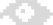

Reincantamento is a
✦ Research & Publishing Group
exploring Technology, Radical
Imagination, and Rituals

AboutReincantamento is a
✦ Research & Publishing Group
exploring Technology, Radical
Imagination, and Rituals